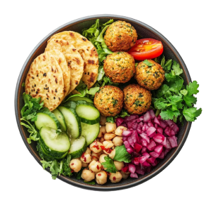
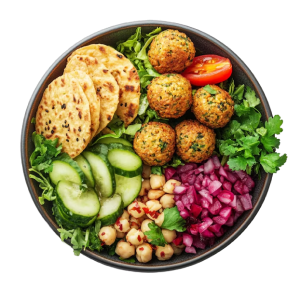
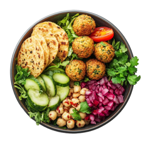

O Verde & Vida nasceu em 2015, fundado por Bianca, com o propósito de transformar a forma como as pessoas se relacionam com a comida e com o próprio bem-estar. Desde o início, acreditamos que alimentar-se bem vai muito além de escolher ingredientes: é um ato de cuidado com o corpo, com o planeta e com a comunidade ao nosso redor. Nossos pratos são preparados com ingredientes frescos, naturais e selecionados com carinho, sempre priorizando produtores locais e práticas sustentáveis. No cardápio, você encontra desde opções clássicas e reconfortantes até combinações criativas e cheias de sabor — como nossos sucos naturais prensados a frio, bowls de falafel crocante e nutritivo, e saladas coloridas que unem equilíbrio e prazer em cada garfada. Atendemos a todos os públicos: vegetarianos, veganos, flexitarianos e também quem está apenas começando a reduzir o consumo de carne. Cada refeição é pensada para oferecer uma experiência completa — saudável, deliciosa e consciente. Mais do que um restaurante, o Verde & Vida é um ponto de encontro. Um espaço que valoriza o convívio, a troca de experiências e o aprendizado. Promovemos eventos, palestras e oficinas que incentivam práticas sustentáveis e um estilo de vida mais equilibrado, conectando pessoas que compartilham do mesmo propósito: viver com mais leveza, saúde e respeito à natureza. 🌿✨
